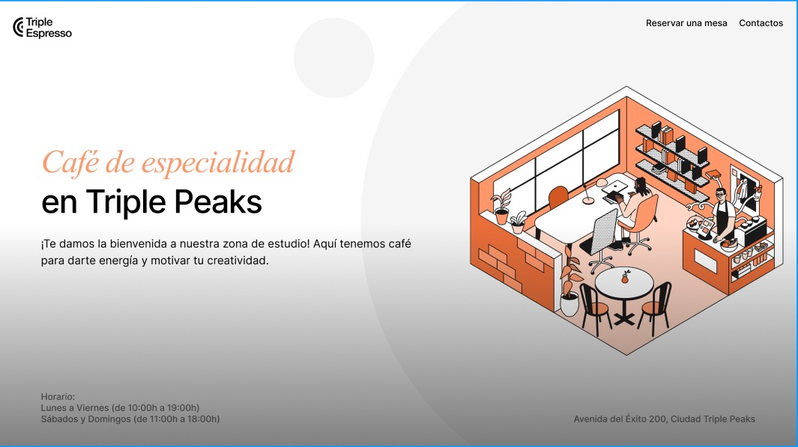
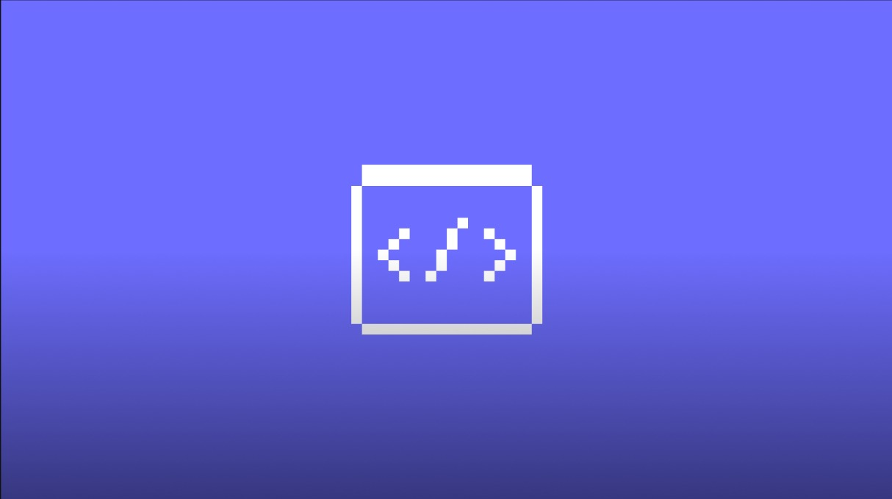

Mariana Hernández
Desarrolladora Full Stack Junior
Typescript, React, Node.js
Desarrolladora web junior con experiencia práctica creando interfaces limpias y responsivas con HTML, CSS, JavaScript y React, así como implementando lógica básica de back-end. Ha trabajado en proyectos formativos que siguen procesos reales de desarrollo, usando Git, GitHub y Figma. Disfruta colaborar en equipo, mantener un código claro y resolver problemas de forma estructurada. Motivada por seguir aprendiendo, asumir nuevos retos y aprovechar oportunidades para crecer como desarrolladora.
Habilidades y herramientas


Proyectos destacados
-

Página web de una cafetería
Desarrollo de una landing page responsiva para una cafetería siguiendo un brief de diseño. Incluye estructura semántica, maquetación con Flexbox, creación de secciones nuevas y un formulario de contacto funcional.
-
-

Página web de TripleTen
Desarrollo de landing page para la plataforma educativa TripleTen. Implementación de diseño responsivo con HTML semántico y CSS moderno. Estructuración de componentes reutilizables y optimización de rendimiento. Desplegado en GitHub Pages con flujo de trabajo Git.
-
 Demo en vivo
Demo en vivo